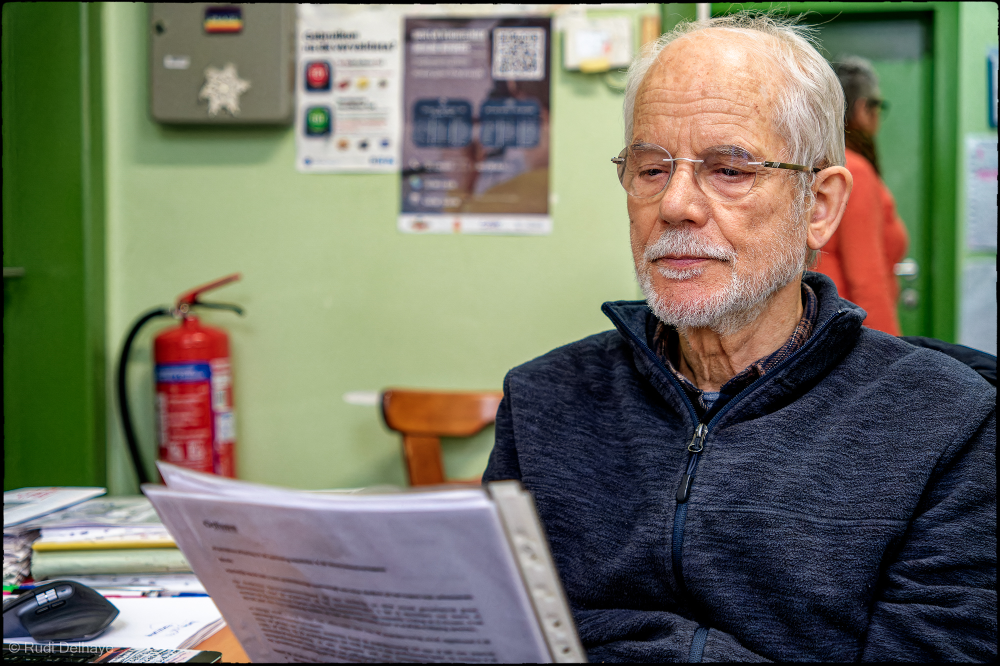
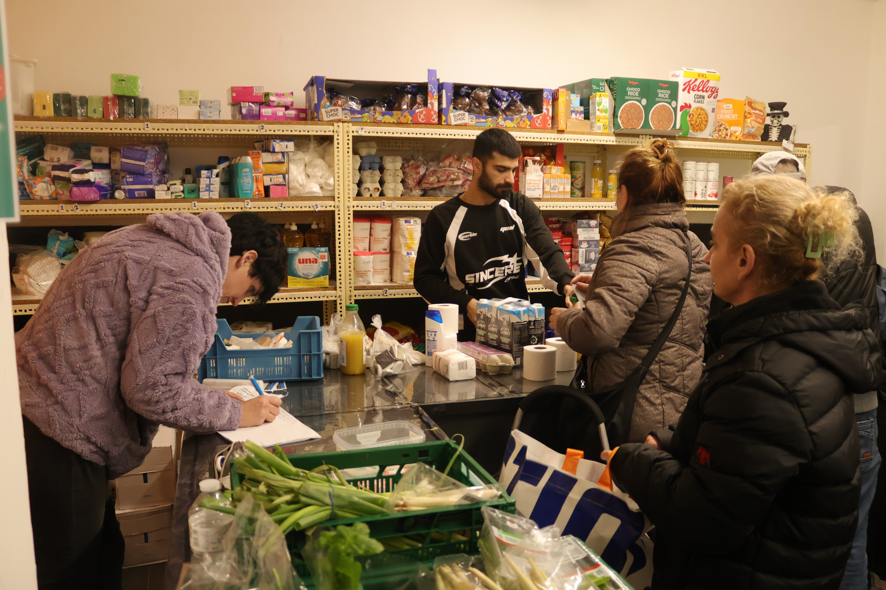
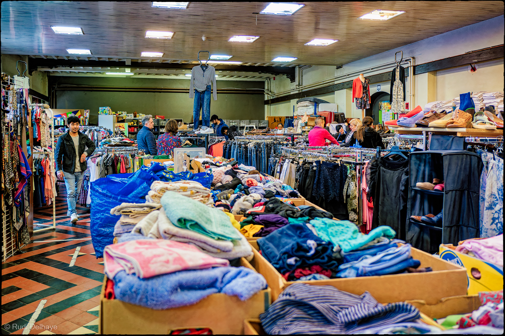
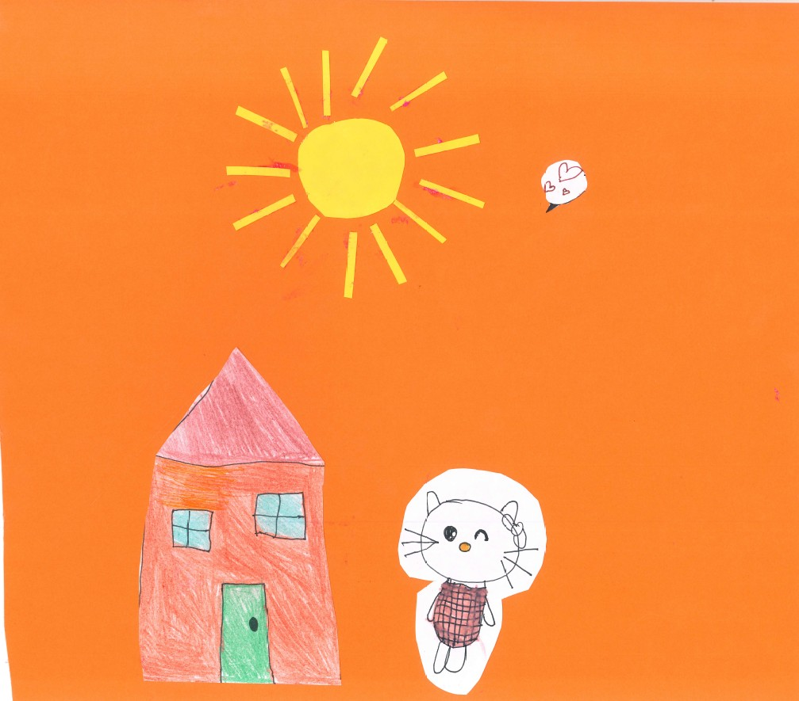
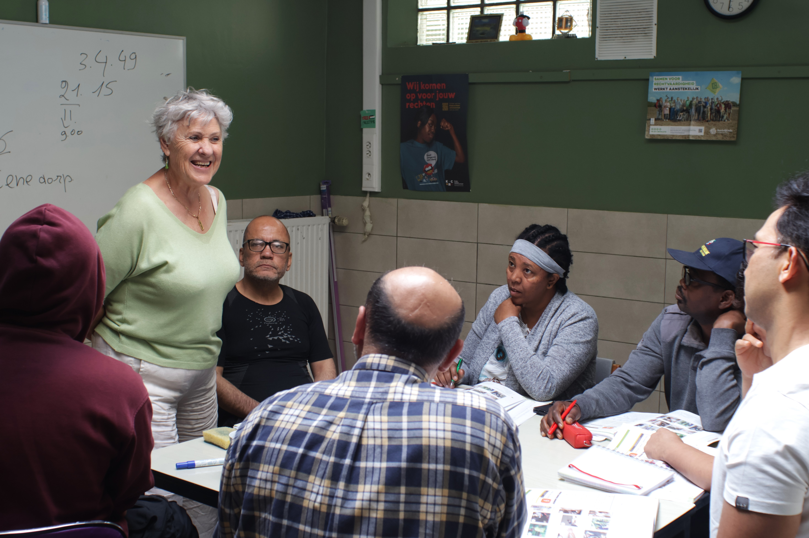

VLOS-Advies
Mensen in precair verblijf vinden vaak moeilijk de juiste weg naar duidelijke en betrouwbare informatie. Bij VLOS bieden we een luisterend oor en helpen we hen verder met praktisch en begrijpelijk advies.
We ondersteunen bij administratieve vragen, sociale rechten, huisvesting, onderwijs en andere dagelijkse uitdagingen. Samen zoeken we naar haalbare oplossingen en verwijzen we indien nodig door naar de juiste diensten.

VLOS-Kruidenier
De VLOS-kruidenier is een warme plek waar mensen in precair verblijf terechtkunnen voor voeding, verzorgings- en kuisproducten. Elke week ondersteunen we meer dan 120 personen en gezinnen, met of zonder kinderen.
Ons aanbod is mogelijk dankzij de solidariteit van velen: particulieren, de Voedselbank, de EU, lokale supermarkten, bakkerijen en scholen. Dit vullen we aan met het aankopen van basisvoeding, zoals eieren, suiker, zout, bloem... Sommige producten worden verdeeld via een puntensysteem, andere mogen vrij meegenomen worden.
We zorgen voor een gevarieerd aanbod zodat gezinnen thuis een gezonde maaltijd kunnen bereiden. Basisproducten zoals vlees, olie, eieren en suiker zijn erg welkom, net als waspoeder en luiers.
Meer dan 20 geëngageerde vrijwilligers zetten zich dagelijks met hart en ziel in om alles op te halen, te sorteren en klaar te zetten.

VLOS-Bazar
In de VLOS-bazar kan je terecht voor (warme) kledij, speelgoed en huishoudmateriaal.
Een 20-tal vrijwilligers verzamelt met enthousiasme kledij, speelgoed en huishoudmateriaal dat met goodwill wordt geschonken door particulieren, bedrijven, bevriende organisaties en scholen.
Om de kwaliteit te garanderen, controleren we alle donaties zorgvuldig. Helaas krijgen we soms spullen die niet bruikbaar zijn en die we moeten afvoeren. Dat brengt kosten met zich mee, middelen die we liever rechtstreeks inzetten voor onze hulpvragers. Daarom rekenen we op uw begrip en vragen we om enkel bruikbare en nette goederen te schenken.
Wil u meubelen of huishoudtoestellen aanbieden? Stuur dan een e-mail met foto's en uw contactgegevens naar info@vlos.be. Sommige items kunnen we aanvaarden wanneer we ze rechtstreeks bij onze hulpvragers kunnen bezorgen.
De VLOS-bazar staat open voor vluchtelingen en asielzoekers. Andere bezoekers betalen een klein bedrag voor hun aankopen. Iedereen is welkom en met elke bijdrage ondersteunt u de werking van VLOS.

Medisch Onthaal
Een team van medisch geschoolde vrijwilligers voorziet op dinsdag en donderdag een open medisch onthaal.
Ze geven medisch advies, de nodige verzorging uit de huisapotheek of de EHBO-koffer, verwijzen door naar de correcte hulp, en brengen de nodige administratieve zaken in orde.

Huisvesting
Het is voor niemand gemakkelijk om een geschikte woning te vinden, maar voor onze bezoekers is het vaak nog heel wat moeilijker. Wanneer we samen naar een woning gaan kijken, zijn er meer dan 20 kandidaten.
Een koppel met een dubbel inkomen, een klein gezin of een alleenstaande man die werkt, krijgt steeds voorrang op mensen die hier nog niet lang zijn, een eerste woning zoeken en afhankelijk zijn van een uitkering. Dit laatste niet omdat zij niet willen werken, maar wel omdat zij nog eerst de integratiecursus, de Nederlandse les en bijkomende opleidingen moeten doorlopen.
Daarom doen wij ook een beroep op jullie, mensen die weten waarvoor we staan en mensen die anderen de kans willen geven een goede start te maken.
VLOS biedt ondersteuning met de administratie, de verhuis en eventuele kleine reparaties. Maar ook tijdens de verhuurperiode blijft VLOS het aanspreek- en ondersteuningspunt, zowel voor de huurder als de verhuurder.
Indien jullie hierover in gesprek willen gaan, mogen jullie steeds contact opnemen met Sebastian via sebastian@vlos.be of op het nummer 0471 55 50 09.

Nederlandse les
Elke dinsdagochtend organiseren wij Nederlandse les voor mensen die niet in het officiële onderwijs terechtkunnen.